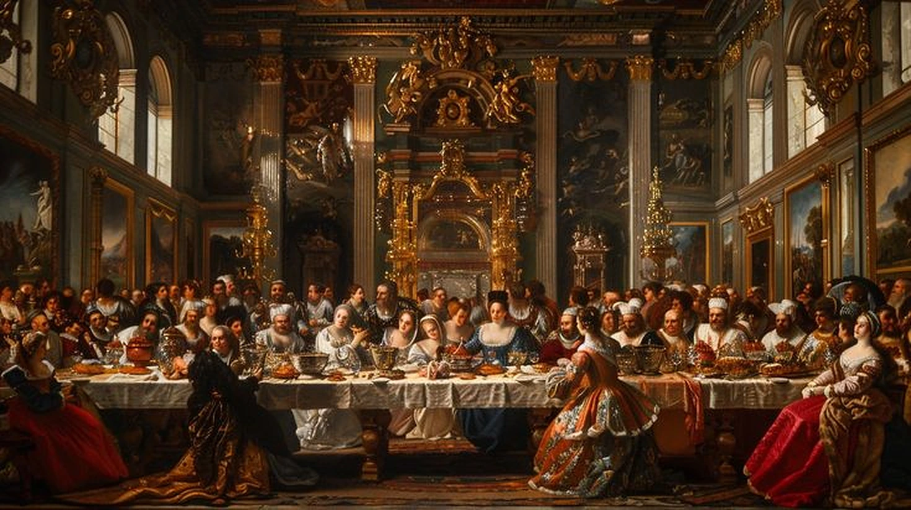
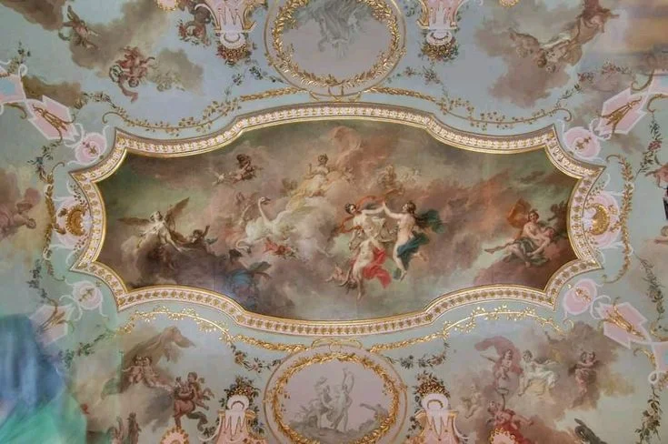
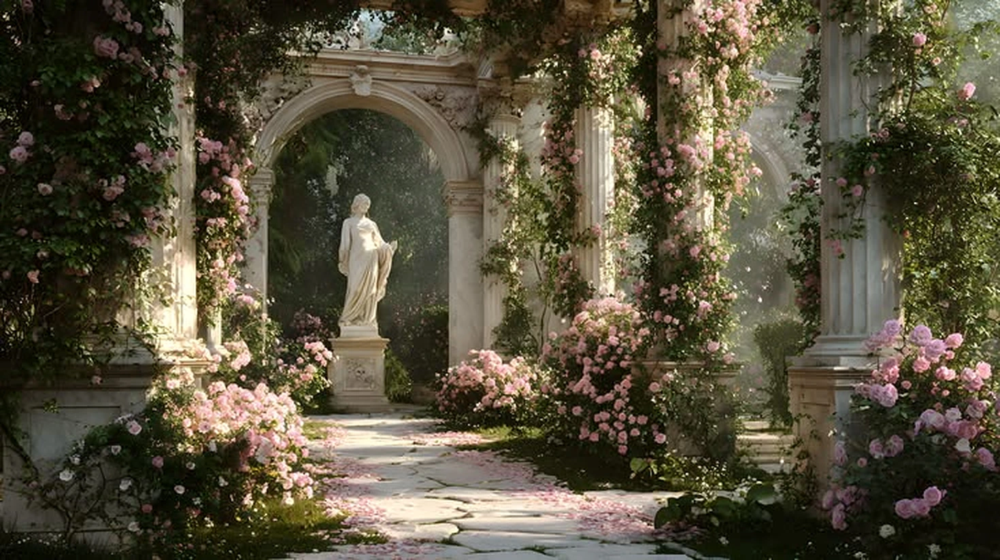
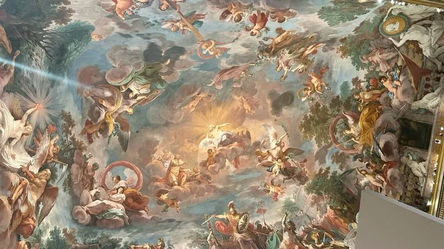
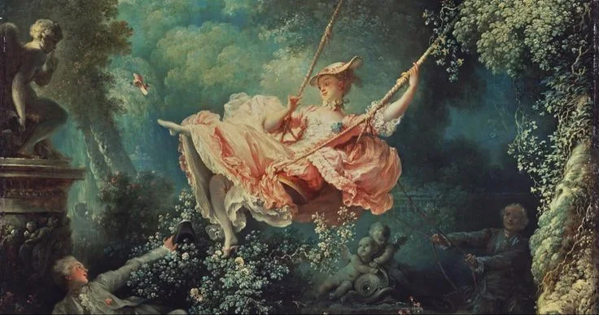

Làm chủ công cụ
Tổ chức tệp, không gian làm việc và quy trình số có hệ thống.
Ba tác phẩm hội họa từ kho mở của The Met và National Gallery of Art được dựng thành một chuyển động chậm — từ đường rừng, yến tiệc thần thoại đến mùa gặt vàng.
Tôi là Võ Thị Thảo Ngân, sinh viên ngành Kinh tế Phát triển tại Trường Đại học Kinh tế — ĐHQGHN. Ngoài giờ học, tôi vẽ và hát: hai cách để quan sát thế giới, lắng nghe cảm xúc và biến ý tưởng thành hình hài.
Mục tiêu của tôi là làm chủ công cụ số và Generative AI theo cách hiệu quả, sáng tạo nhưng không đánh mất trách nhiệm học thuật. Portfolio này lưu lại quá trình ấy — từ quản lý dữ liệu, tìm kiếm thông tin đến prompt, hợp tác, sáng tạo và liêm chính số.
MSSV 25050691 · Lớp VNU1001_E252042
Tôi muốn trở thành một công dân số toàn diện: biết dùng công cụ, biết đặt câu hỏi, biết kiểm chứng và biết chịu trách nhiệm với điều mình tạo ra.
Tổ chức tệp, không gian làm việc và quy trình số có hệ thống.
Tìm kiếm chiến lược, đánh giá nguồn và không chấp nhận kết quả đầu tiên.
Prompt rõ ràng, phối hợp nhiều công cụ và luôn có quyết định cá nhân.
Giữ ranh giới giữa hỗ trợ và gian lận, tôn trọng nguồn và bản quyền.



Mỗi bài tập là một case study độc lập — có mục tiêu, cách làm, lựa chọn và kết quả. Cuộn để đi qua triển lãm; chạm vào từng tác phẩm để đọc toàn bộ câu chuyện.
Bài 1 · Hạ tầng cá nhân
Quản lý tệp và thư mục
Thiết lập hệ thống tổ chức dữ liệu số khoa học, hỗ trợ lưu trữ và truy xuất thông tin hiệu quả.
Bài 2 · Tín hiệu / Nhiễu
Tìm kiếm và đánh giá thông tin
Phát triển chiến lược tìm kiếm và năng lực đánh giá độ tin cậy của nguồn tin học thuật.
Bài 3 · Đối thoại máy
Viết prompt hiệu quả trong học tập
Rèn luyện kỹ năng Prompt Engineering để khai thác Generative AI phục vụ học tập.

Bài 4 · Đồng sáng tạo
Sử dụng công cụ hợp tác trực tuyến
Ứng dụng công cụ số để quản lý và phối hợp làm việc nhóm hiệu quả.

Bài 5 · Từ ý tưởng đến hình
Ứng dụng Generative AI sáng tạo nội dung số
Vận dụng chuỗi công cụ Generative AI để thiết kế ấn phẩm truyền thông có định hướng rõ ràng.
Bài 6 · Ranh giới trách nhiệm
An toàn và liêm chính học thuật
Hình thành nguyên tắc sử dụng AI có trách nhiệm trong học tập và nghiên cứu.
Tôi không chỉ học cách dùng công nghệ. Tôi học cách trưởng thành cùng nó.
Sáu dự án đưa tôi từ việc biết một công cụ tồn tại đến khả năng chọn đúng công cụ, tạo quy trình, kiểm chứng kết quả và chịu trách nhiệm với sản phẩm cuối.